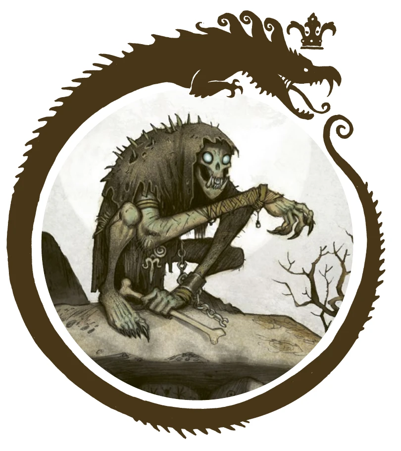
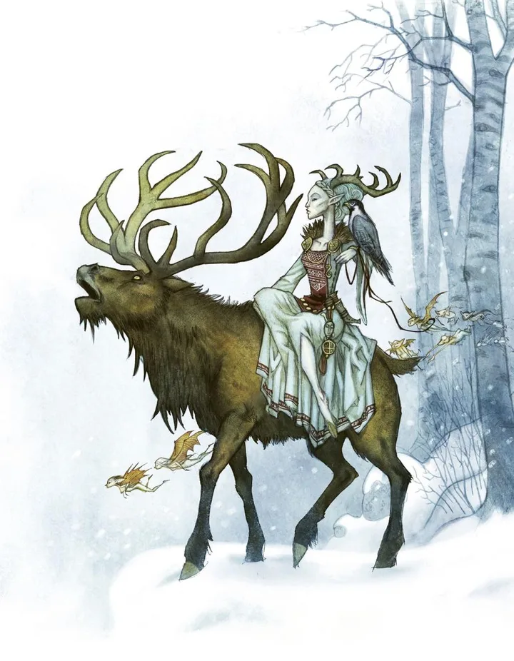
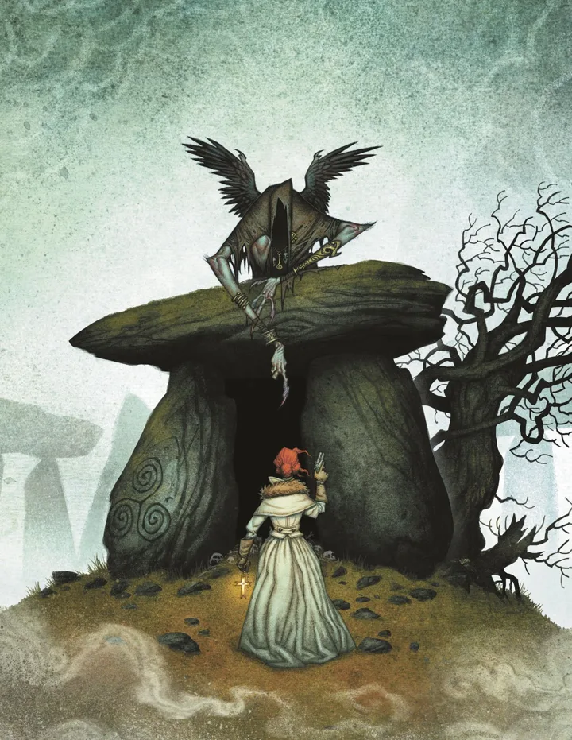

Der Mythische Norden
Vaesen
20 Wesen des Nordens
Regeln
Charaktere
Der Norden
Gesellschaft
Mysterium
Karten
Grundregelwerk

Der Tanz
der Träume
Einführungsmysterium · Upsala
Countdown
0 / 4
· Hinweise
0 / 17
Starten
Seasons of Mystery
Frühling
Ein Tanz mit dem Tod
Dalarna
Sommer
Feuerherz
Småland
Herbst
Der Teufel im Moor
Jütland
Winter
Ein Wintermärchen
Ingermanland
Bücher
Grundregelwerk

Seasons of Mystery

Mythic Britain & Ireland
Mythic Carpathia
A Wicked Secret
Lost Mountain Saga
City of My Nightmares
Thursday’s Child

 Grundregelwerk
Grundregelwerk Mythic Carpathia
Mythic Carpathia A Wicked Secret
A Wicked Secret Lost Mountain Saga
Lost Mountain Saga City of My Nightmares
City of My Nightmares Thursday’s Child
Thursday’s Child